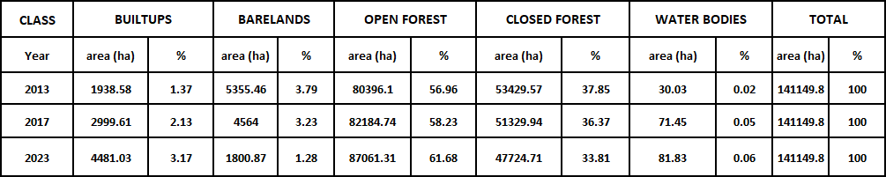
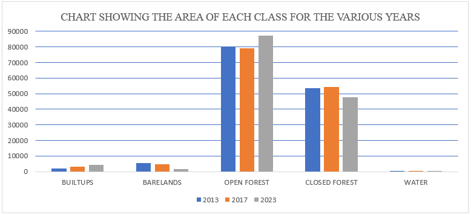
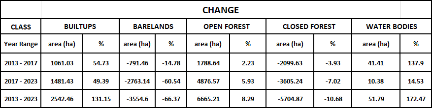

Land Cover Change Analysis in Asunafo North Municipality
Using Remote Sensing (2013–2023)
Project Overview
This project tracks land cover changes over a ten-year period in Asunafo North Municipality, Ghana. Key classes analyzed: Closed Forest, Open Forest (farmlands, grasslands, shrubs, etc.), Urban, Water, and Bare Land. The study highlights deforestation, agricultural expansion, and urbanization trends to support conservation, planning, and sustainable development using GIS and remote sensing tools.
Objectives
- Classify land cover from Landsat satellite data for 2013, 2017, and 2023.
- Calculate area and percentage for each class.
- Quantify changes over the study period.
- Visualize results with maps and charts.
Data & Methodology
USGS Landsat 8 Level-2 surface reflectance data processed in Google Earth Engine (cloud cover <10%). Supervised classification performed with Random Forest algorithm. Classified rasters exported to QGIS for mapping and area calculation; statistics computed in Excel.
Key tools: Google Earth Engine (JavaScript), QGIS, Microsoft Excel.
Results
Land Cover Maps
2013

2017

2023

Statistics
Area statistics in hectors and percentages
Area Statistics Bar Chart
Change Detection Statistics
Key Insights
Rapid urbanization and expansion of open forest/agriculture observed. Significant closed forest loss raises biodiversity and carbon sequestration concerns. Results underscore the need for stronger land-use policies in the municipality.
Skills Demonstrated
- Remote sensing & image classification (Google Earth Engine – JavaScript/Python)
- Spatial analysis & cartography (QGIS)
- Statistical analysis & visualization (Excel)
- Change detection & post-classification comparison
This entry in my portfolio showcases my ability to apply GIS techniques to real-world environmental challenges, delivering actionable insights through clear, data-driven narratives.